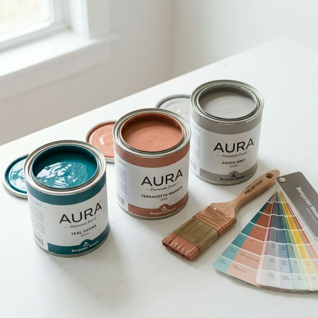

Unsere Geschichte
ProMaler wurde vor über 15 Jahren mit der Vision gegründet, höchste Handwerkskunst mit modernem Design zu verbinden. Was als kleiner Familienbetrieb begann, hat sich heute zu einem renommierten Malerbetrieb in Berlin entwickelt.
Unsere Leidenschaft gilt den Farben und der Verwandlung von Räumen. Wir glauben, dass jedes Zuhause eine individuelle Note verdient, die durch professionelle Beratung und präzise Ausführung erreicht wird.


Unsere Leidenschaft: Farben
Bei ProMaler arbeiten wir ausschließlich mit hochwertigsten Farben und umweltschonenden Materialien. Wir wissen, dass die richtige Farbwahl das Wohlbefinden in Ihren Räumen maßgeblich beeinflusst.
Unsere Experten beraten Sie umfassend bei der Auswahl der perfekten Nuancen und Oberflächenstrukturen, um Ihren persönlichen Stil perfekt zur Geltung zu bringen. Nachhaltigkeit und Langlebigkeit stehen dabei immer an erster Stelle.
Unsere Werte
Qualität
Keine Kompromisse bei Material und Ausführung.
Zuverlässigkeit
Wir halten unsere Versprechen und Termine.
Sauberkeit
Wir hinterlassen Ihren Wohnraum so sauber, als wären wir nie da gewesen.